Dr. Dénes Csala
2022.10.07
1. hét
1. lecke
Adattudomány
Ősz 2022
Andrew Ng - Stanford University Machine learning course
Andrew Ng - deeplearning.ai
Microsoft Machine Learning
Google Digital Workshop
Datacamp: Machine Learning for Business course
Towards Data Science blog
Szegedi Egyetem gépi tanulás kurzus
Budapesti Műszaki Egyetem gépi tanulás kurzus
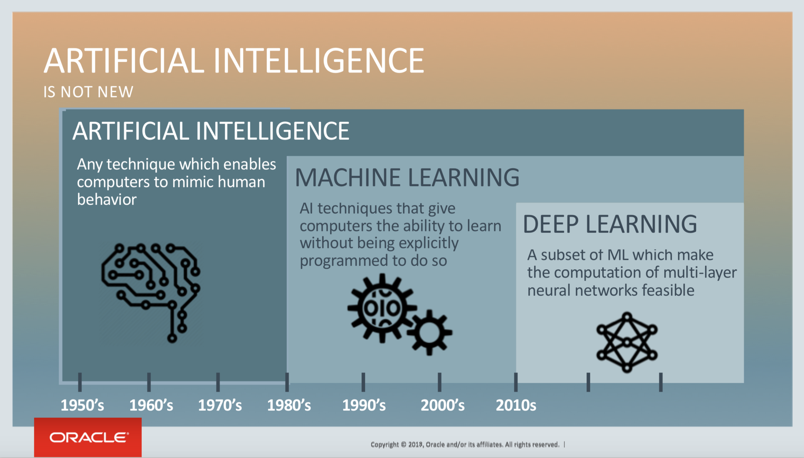
Dr. Dénes Csala
Bevezető a gépi tanulásba
2022.10.07
1. hét
2. lecke
Adattudomány 2
Ősz 2022
A gépi tanulásnak számos alkalmazási módja van, a lehetőségek tárháza pedig egyre szélesebb. Íme a technológia néhány legnagyobb előnye, amelyet már számos vállalkozás kihasznál.
Előnyei
A gépi tanulással azonosítható mind a strukturált, mind a strukturálatlan adatokban rejlő minta vagy szerkezet, így könnyebben látható, mit is mutatnak az adatok.
A gépi tanulás kiválóan használható az adatbányászatban, sőt akár annak lehetőségeit is képes kiterjeszteni.
Előnyei
Adaptív interfészek, célzott tartalom, csevegőrobotok, hangvezérelt virtuális asszisztensek – ezek mind példák arra, hogy a gépi tanulás hogyan segíthet optimalizálni az ügyfélélményt.
Mivel a csalási taktikák folyamatosan változnak, a gépi tanulásnak lépést kell tartani velük – képesnek kell lennie megfigyelni és azonosítani az új mintákat, hogy megelőzhesse a rosszindulatú próbálkozásokat.
Előnyei
A gépi tanulással ügyfélhez kapcsolódó adatok bányászhatók, amelyekkel könnyebben azonosíthatók minták és viselkedésmódok, ami optimalizált termékjavaslatokat és a lehető legjobb vásárlói élményt eredményezheti.
A gépi tanulás jelentős szintű folyamatautomatizálást tesz lehetővé, ami időt és erőforrásokat szabadít fel, Ön és csapata így a legfontosabb ügyekre összpontosíthat.
Előnyei
A regressziós algoritmusok értékekből hoznak létre modellt, amely alapján előrejelzéseket készíthetnek. Ez hasznos a változók okainak és okozatainak azonosításában. A regressziós tanulmányok segítenek előrejelezni a jövőt, ami segíthet a termékekre vonatkozó igényének előrejelzésében, az értékesítési számadatok tervezésében, vagy a kampányeredmények megbecslésében.
Felhasználása
Az anomáliadetektálási algoritmusokat gyakran használják lehetséges kockázatok észlelésére, ugyanis képesek kiszűrni a várt normától eltérő adatokat. Berendezések meghibásodása, szerkezeti hibák, szöveges hibák, valamint csalások – néhány példa arra, hogy a gépi tanulás hogyan használható veszélyforrások esetén.
Felhasználása
A fürtözési algoritmusok gyakran a gépi tanulás első lépését képezik, és az adatkészlet mögöttes struktúráját fedik fel. A gyakori elemek kategorizálása – a fürtözés – gyakori eljárás a piaci szegmentálásban, és olyan elemzéseket nyújthat, amelyek elősegítik a megfelelő ár kiválasztását, valamint az ügyfelek preferenciáinak megjósolását.
Felhasználása
A besorolási algoritmusok segítenek meghatározni az információk megfelelő kategóriáját. A besorolás a fürtözéshez hasonlít, azonban eltér abban, hogy a felügyelt tanulásban alkalmazzák, ahol előre meghatározott címkék szerepelnek.
Felhasználása
A kockázatkezelés és a csalások megelőzése olyan kulcsfontosságú területek, ahol a gépi tanulás hatalmas hozzáadott értéket jelent a pénzügyi környezetekben.
Iparágak
Diagnosztikai eszközök, páciensfigyelés és járványok előrejelzése – néhány példa arra, hogy a gépi tanulás hogyan segíthet a páciensek kezelésének továbbfejlesztésében.
Forgalmi anomáliák azonosítása, kézbesítési útvonal optimalizálása, önvezető autók – néhány példa arra, hogy a gépi tanulás hogyan javíthat a szállítmányozás minőségén.
Iparágak
Kérdések megválaszolása, az ügyfélszándék megbecslése, virtuális segítségnyújtás – néhány példa arra, hogy a gépi tanulás hogyan képes támogatni az ügyfélszolgálati ipart.
A gépi tanulással a kiskereskedők könnyebben elemezhetnek vásárlási mintákat, optimalizálhatják az ajánlatokat és a díjszabást, valamint használhatják az adatokat az ügyfélélmény javítására.
Iparágak
A munkaerőhiányt pótló robotok fejlesztése, növényi betegségek diagnosztizálása, vagy a talajminőség figyelése – néhány példa arra, hogy a gépi tanulás miként segíthet a mezőgazdaság fejlesztésében.
Iparágak
Dr. Dénes Csala
Alapvető gépi tanulási technikák
2022.10.07
1. hét
3. lecke
Adattudomány 2
Ősz 2022
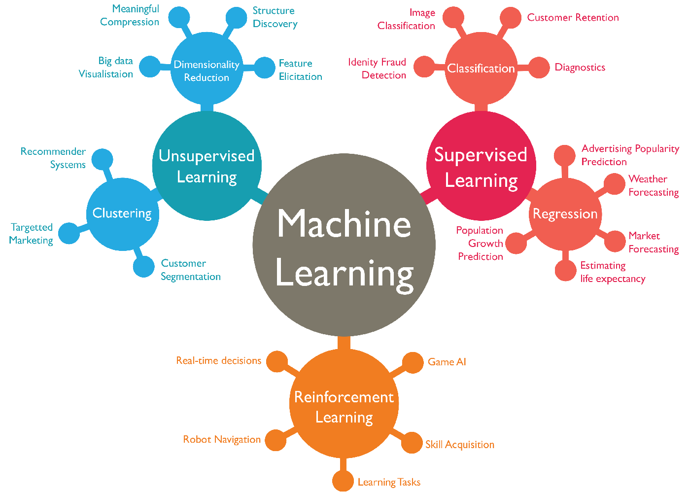
Címkékkel vagy struktúrával ellátott adatkészletek esetén az adatok „betanítják” a gépet, így az hatékonyabban végezhet előrejelzéseket és hozhat döntéseket.
Adatok fürtökbe való csoportosításával könnyebben foglalkozhat címkék vagy struktúra nélküli adatokkal, valamint azonosíthat mintákat és kapcsolatokat.
Az ügynök (valaki vagy valami nevében tevékenykedő számítógépprogram) az emberi operátort helyettesíti, és segít egy visszajelzési hurok alapján meghatározni az eredményt.
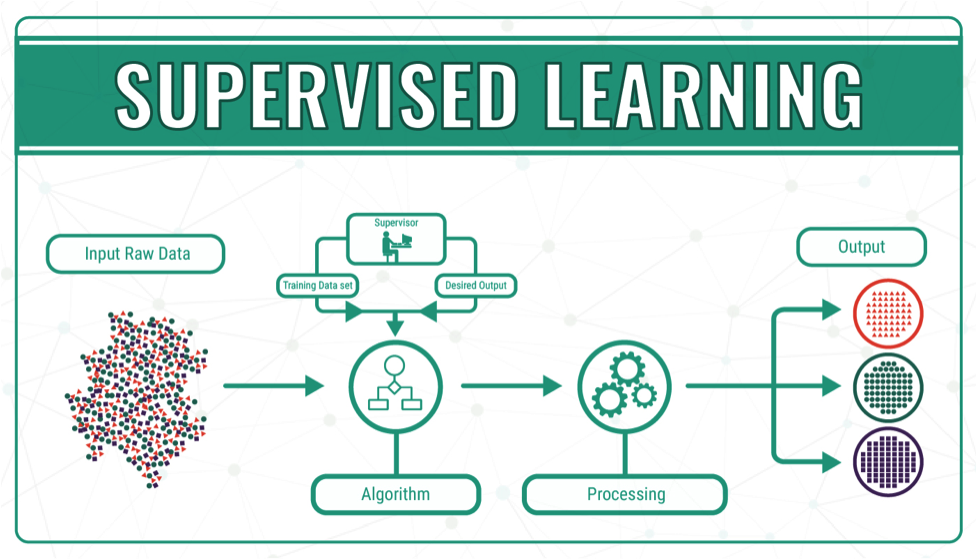
Tanulási technikák
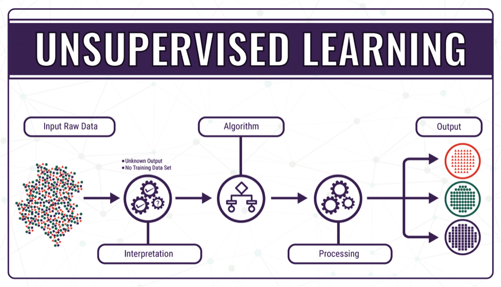
Tanulási technikák
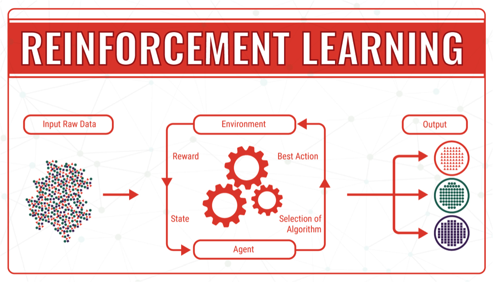
Tanulási technikák
Dr. Szabados Levente
Haladó gépi tanulási technikák
2022.03.26
2. hét
4. lecke
Adattudomány 2
Tavasz 2022
Dr. Dénes Csala
Gépi tanulási algoritmusok
2022.03.26
2. hét
5. lecke
Adattudomány 2
Tavasz 2022
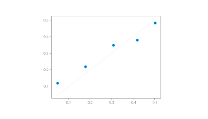
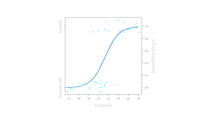
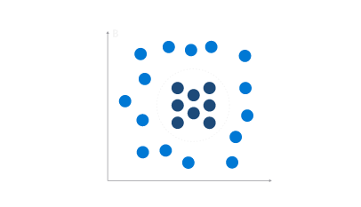
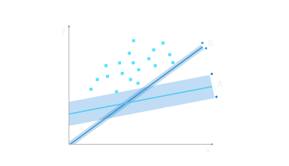
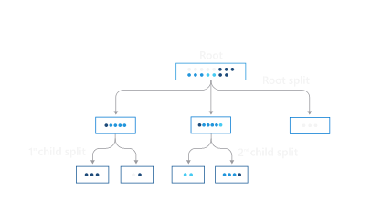
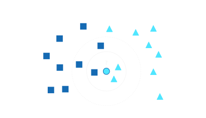
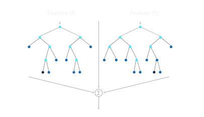
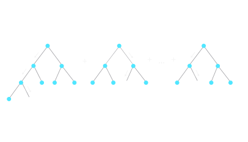
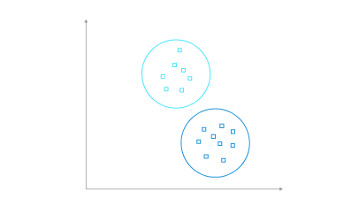
Sükösd Endre
Részrehajlás és torzítás a mesterséges intelligenciában
2022.04.08
3. hét
6. lecke
Adattudomány 2
Tavasz 2022
Dr. Dénes Csala
Gépi tanulás
2022.04.09
3. hét
7-8. lecke
Adattudomány 2
Tavasz 2022
Az adatforrások azonosítása után a rendszer lefordítja a rendelkezésre álló adatokat. A felhasználható adattípusok segítenek meghatározni, hogy mely gépi tanulási algoritmusokat használhatja. Az adatok áttekintésekor a rendszer azonosítja az anomáliákat, kialakít egy struktúrát, valamint megoldja az adatintegritással kapcsolatos problémákat.
Lépések
Az előkészített adatok két csoportra oszlanak: egy betanítási készlet és egy tesztelési készlet. A betanítási készlet az adatok nagy része, amellyel a modelleket a lehető legpontosabban finomhangolhatja.
Lépések
Ha készen áll a végső adatmodell kiválasztására, a tesztelési készlettel kiértékelheti a teljesítményt és a pontosságot.
Lépések
Tekintse át az eredményeket, és végezze el az elemzéseket, vonja le a következtetéseket, és tervezze meg a kimeneteket.
Lépések
Dr. Dénes Csala
Adattudomány 2
Tavasz 2022
Dr. Dénes Csala
Adattudomány 2
Tavasz 2022